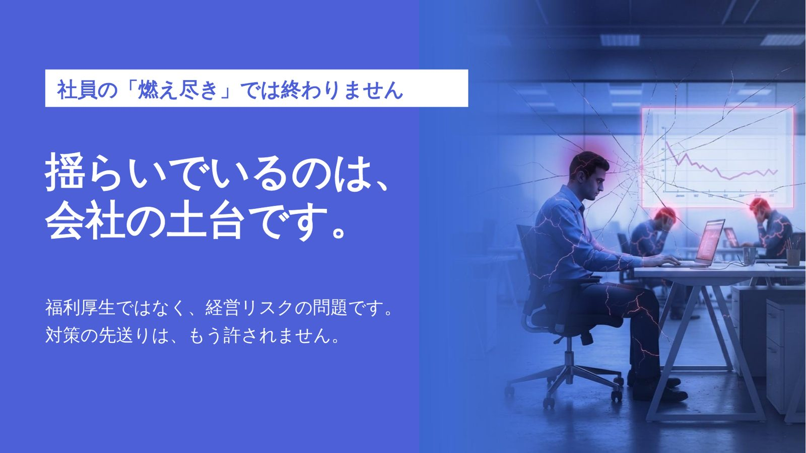
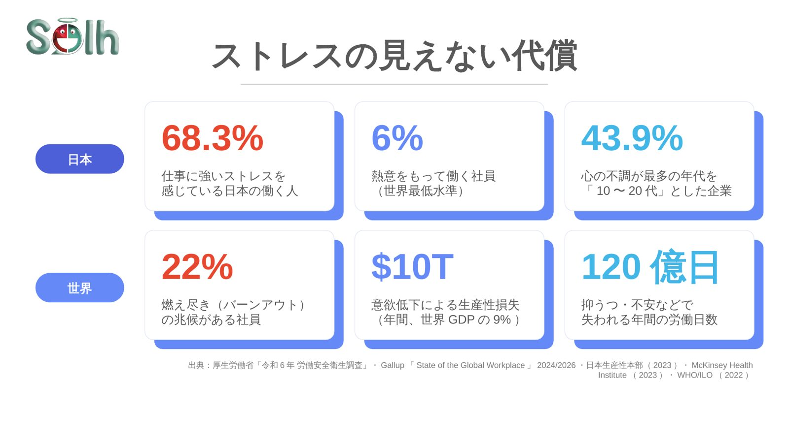
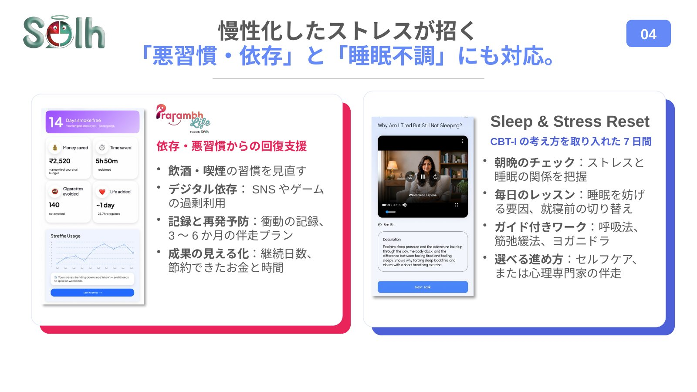
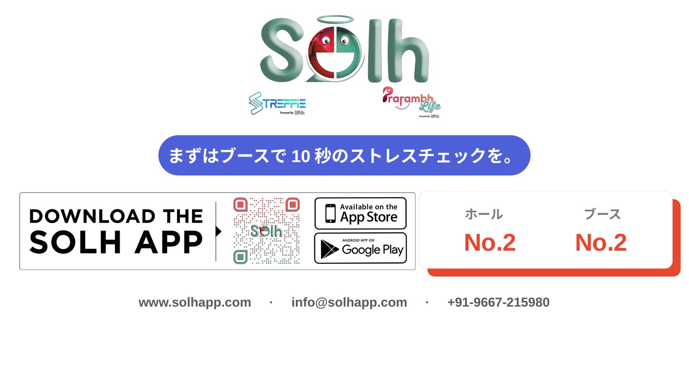

社員の「燃え尽き」では終わらない。
揺らいでいるのは会社の土台です。
福利厚生ではなく、経営リスクの問題です。ストレスの見えない代償は、日本でも世界でも大きくなっています。
出典：厚生労働省「令和6年 労働安全衛生調査」、Gallup「State of the Global Workplace」2024/2026、日本生産性本部（2023）、McKinsey Health Institute（2023）、WHO/ILO（2022）
「メンタルヘルス」ではなく
「ストレス」と向き合う。
疾患ではなく日常のストレスを数値化
扱うのは、誰もが抱える日常のストレスです。医学的な疾患とは明確に区別し、数値で捉えます。
ストレスを成果の力に
適度なストレスは成果の原動力です。燃え尽きる前に、最適なゾーンへ戻すことを目指します。
見えないものは改善できない。
だから「10秒」で見える化する。
- カメラを見るだけウェアラブルや専用機器は不要です。
- その場でスコア化ストレスの状態を1〜10で表示します。
- プライバシーに配慮顔画像は保存せず、匿名で使えます。
- マルチデバイスキオスク・PC・スマホに対応しています。
ストレスは30〜60日かけて蓄積し、やがて離職などの数字に表れます。Streffieなら、手遅れになる前に「小さな兆し」をつかめます。
必要なのは「単発の施策」ではなく
継続的に支える「エコシステム」です。
Streffie
10秒で終わるAIストレスチェック。
Solh Buddy
24時間365日、気持ちの振り返りを手伝うAIの話し相手。緊急時の相談窓口の代わりではありません。
SMART Dashboard
チーム・部署の傾向を、個人が特定されない形で集計して表示。
Solh App
専門家による1,000以上のコンテンツと、状態に合わせたケアプラン。
Prarambh Life
悪習慣や依存からの回復を支えるプログラム。
※ 日本語で利用できる範囲や、日本での提供方法（共用の端末、各自のスマホ・PCなど）は、お問い合わせください。
慢性化したストレスが招く
「悪習慣・依存」と「睡眠不調」にも対応。
依存・悪習慣からの回復支援（Prarambh Life）
- 飲酒・喫煙の習慣を見直す
- デジタル依存：SNSやゲームの過剰利用
- 記録と再発予防：衝動の記録、3〜6か月の伴走プラン
- 成果の見える化：継続日数、節約できたお金と時間
Sleep & Stress Reset（CBT-Iの考え方を取り入れた7日間）
- 朝晩のチェック：ストレスと睡眠の関係を把握
- 毎日のレッスン：睡眠を妨げる要因、就寝前の切り替え
- ガイド付きワーク：呼吸法、筋弛緩法、ヨガニドラ
- 選べる進め方：セルフケア、または心理専門家の伴走
法定のストレスチェックの「前後」を補う使い方
※ Solhのサービスは医療行為・診断を行うものではありません。法定のストレスチェックの代わりにはなりません。
画像とデータの扱い（展示会での体験の場合）
- お名前・連絡先は入力しません匿名モードで体験いただけます。
- 画像は保存しませんストレスの推定にだけ使い、AWS India（Mumbai region）のサーバーで解析したあと、数秒で削除します。
- 結果は匿名で記録日時・キオスク番号・セッション番号とだけ記録され、お名前や連絡先とは結びつきません。
※ 会社でお使いいただく場合のデータの扱いは、導入の形に合わせてご説明します。
AI World 2026 セミナー資料（日本語版）
11/5 のセミナーでお見せしたスライドです。画像を押すと大きく表示されます。










まずは30分のオンライン説明から
日本語でのお問い合わせ：ユウゲンキカク 青戸 晃生
メール aoto.kosei@you-gen.com
Solh Wellness：info@solhapp.com｜www.solhapp.com
※ ユウゲンキカクは、Streffieの日本でのご案内とご連絡を担当しています。